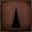
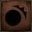

Ludwig's Holy Blade is a Trick Weapon in Bloodborne.
Ludwig's Holy Blade Description
"A trick weapon typically used by Healing Church hunters. It is said that the silver sword was employed by Ludwig, the first hunter of the church. When transformed, it combines with its sheath to form a greatsword.
It exhibits several departures from the workshop's design, suggesting that the Church anticipated much larger inhuman beasts."
Ludwig's Holy Blade Information
- This Trick Weapon is a longsword that can be transformed into a greatsword (by combining the sheath, as mentioned above in the description).
- The normal form is wielded with one hand.
- When transformed, it's wielded with two hands instead.
- Both forms deal 50% extra damage against foes vulnerable to Righteous.
Location
Normal
- Can be purchased for 20,000 echoes from the Messengers after obtaining the Radiant Sword Hunter Badge.
Ludwig's Uncanny Holy Blade
- Cursed and Defiled Root Chalice
- Glyphs: brkepzqq (Layer 1 bonus area, past lever gate), bjs2rx72 (Layer 1, pre-area)
Ludwig's Lost Holy Blade
- Isz Root Chalice
- Sinister Isz Root Chalice
- Glyphs: 6ig4ifre (Layer 3), gc2nhw6u (Layer 1), 9fzgw3ec (Layer 3)
Player Notes
- The normal form is a longsword wielded in one hand, with decent range and speed.
- The transformed mode is essentially an oversized greatsword wielded in both hands, much slower than the normal mode but with greater reach and damage.
- The charged R2 attack is a thrust with excellent range.
- The charged R2 can be followed up by another R2 capable of pancaking a victim and dealing high damage.
- It can be useful for catching opponents off-guard if they think they're safe after dodging the initial lunge.
- Pressing L2 in the greatsword form causes the hunter to perform an overhead attack with good forward reach.
- The charged R2 attack is a thrust with excellent range.
- It, along with the Kirkhammer, has a unique mechanic where pressing R1 immediately after a neutral transformation causes the hunter to perform a special attack that combines the fighting style of both forms.
- Ludwig's Holy Blade is known as a "quality build" (STR/SKL) weapon due to its scalings. It can also be a good weapon for Arcane builds due to its excellent scaling in the stat and Bloodgem slots making it a very good elemental weapon.
Stats/Scaling
R: Rally/Regain. The amount of HP regained on an R1 attack immediately after taking damage

Move sets & Videos
| Move | Damage Type & Modifier | Stamina | Effect |
|---|---|---|---|
| R1 Combo |  0.70x, 0.71x, 0.72x, 0.74x, 0.76x 0.70x, 0.71x, 0.72x, 0.74x, 0.76x |
16 | This is a four attack combo with a little flourish. The first attack is from right to left slashing on a downward diagonal followed by a horizontal slash from left to right, a dexterous spin to bring the sword overhead for a downward slash ending in a forward thrust that tends to also aim up. The first and third strikes hit the ground. |
| Quickstep R1 | 0.67x |
20 | Each quickstep has a unique animation, All three feature longer than average leaps toward the opponent, making this a great weapon to use quickstep attacks to close in on an opponent quickly. The left step leads to a horizontal slash from left to right, with a right step being mirrored (right to left slash). The forward quickstep results in an upward vertical slash that starts at the ground near the right foot and ends over the left shoulder. |
| Backstep R1 | 0.67x |
20 | The weapon is brought to the lower left side of the body and raised rapidly in a mostly vertical upward slash, ending over the right shoulder. The leap forward is less dramatic than the quickstep counterparts, but does place the character very slightly advanced of where they were before the backstep. |
| Rolling R1 | 0.67x |
20 | The sword is brought from the ground up in a slashing motion that starts with sparks on the ground and ends overhead. |
| Dash R1 | 0.80x |
30 (+run) | The hunter takes a short step and slashes the sword from left to right horizontally. |
| R2 Attack | 1.00x | 55 | A short windup animation leads to a thrust directly forward. |
| Charged | 1.20x | 75 | The standard R2 windup animation is lengthened and at the end, a quick twist of the arm precedes a violent thurst forward. Very similar looking to the thrust of the standard R2, however the point of the blade is thrust upward as well as forward. |
| Backstep R2 | 0.85x | 40 | The backstep R2 is very similar to the standard R2 except preceded by a very small step with the left foot which allows for a lunge with the right to extend the sword out. |
| Dash R1 | 0.80x |
30 (+dash) | Another thrust attack very similar to the standard R2. |
| Dash R2 | 0.95x | 50 (+dash) | |
| Leap | 1.20x | 50 | The arm holding the sword is cocked back as the leap starts and the blade is thrust forward and down into the ground. |
| Transform Attack | 1.05x | 40 (+x) | There appears to only be one transformation animation, regardless of the prior action. The sword is slid into the scabbard/larger blade, raised overhead and brought down in a vertical slash that strikes the ground. The animation is actually started the same as the standard (not attack) transformation attack. |
| R1 after Transformation | ? | ? | After sliding the longsword into the scabbard, the hunter uses one arm to slice horizontally from left to right. |
| Move | Damage Type & Modifier | Stamina | Effect |
|---|---|---|---|
| R1 Combo | 1.00x, 1.00x, 1.06x | 36 | A three slash combo beginning with a right to left mostly horizontal slash, then a left to right horizontal slash that loses elevation. This loss of elevation is then used to windmill the sword up and down in a vertical slash. While the two horizontal slashes do have some ability to hit enemies to the sides, the arc is relatively narrow than the size of the sword might suggest. |
| Quickstep R1 | 0.90x | 40 | A quickstep left results in a hop forward and a slash from left to right horizontally. A right step is mirrored to this (right to left slash). A forward step uses the same slash animation as the right step, but has a less pronounced hop forward. |
| Backstep R1 | 0.56x | 20 | The sword is placed in front of the hunter like a shield with the left hand supporting the flat of the blade. As the player lunges forward, the weapon is used to push out like a shield bash. |
| Rolling R1 | 0.90x | 40 | Apart from a slight change in attack angle, this is nearly identical to the standard R1. |
| Dash R1 | 1.01x | 30 (+run) | The sword is slashed from right to left in a mostly horizontal path. There is a slightly longer windup than many of the other similar slashes. |
| R2 Attack | 1.25x | 50 | This has a somewhat long windup with the sword being brought to the left side of the player and back with the blade parallel to the ground. The weapon is then thrust forward and slightly up |
| Charged | 2.20x 1.56x |
75 | A thrust very similar to the standard R2 but with a significantly increased windup time. |
| L2 | 1.15x, 1.15x, 1.18x, 1.13x | 38 | The sword is brought down on a diagonal from right to left, smashing into the ground, then left to right in a diagonal, another left to right on a diagonal (with a spin move to make this happen) followed finally by a thrust attack creating a four move combo. |
| Backstep R2 | 1.06x | 35 | The sword is brought low and to the right and raised very rapidly in a vertical slash that end with the sword pointing behind the character. |
| Dash R2 | 1.14x | 40 (+run) | The sword is brought up and down in a vertical slash that ends in the ground. |
| Leap | 1.20x | 50 | The sword is held overhead while leaping and is brought slashing straight down into the ground. |
| Transform Attack | 1.26x | 30 (+x) | There is only one transformation attack animation which is the hunter bringing the sword from left to right information a wide horizontal slash. This particular slash creates a greater arc than other slashes with this sword and ends with the character smoothly dropping the larger blade/scabbard onto their back and pulling the small sword/handle out. The attack is with the large blade which is significant as most transformation attacks use the attack form of the mode it's being turned into (the smaller sword would be expected in this case). |
| R1 after Transformation | ? | ? | After removing the thin sword from the scabbard, the hunter uses two hands to slice down vertically. |
Trivia
- This trick weapon was wielded by Ludwig, a famous hunter of the Healing Church who designed the blade based on the Holy Moonlight Sword.
- According to the description, Ludwig wielded this sword in combat instead of the Holy Moonlight Sword.
- However, in his boss fight, he wields the Holy Moonlight Sword during a certain part in the fight.
- It is possible that Ludwig wielded the Holy Moonlight Sword and his fellow hunters, inspired by the huge weapon, sought to make replicas. Unable to make a magic sword, a huge metal sheath was the compromise.
- Before the DLC's release, Ludwig's Holy Blade was thought of as From Software's traditional "Moonlight Greatsword" seen throughout various games by the fanbase.
- However, this sword was eventually revealed in the DLC to be a replica of the "true" Moonlight Greatsword in Bloodborne, the Holy Moonlight Sword.
- This isn't the first time Miyazaki used the name of classical music composers in a game.
- A boss from the first "Dark Souls" game, Dragonslayer Ornstein, is named after Leo Ornstein.
- Berlioz from "Armored Core 4" is named after Hector Berlioz.
- The normal form of this weapon is very similar to the sword used for the Kirkhammer.
- However, this sword's normal form has a slightly longer reach when compared to the Kirkhammer's blade.
- The similar nature of these swords suggests that the Healing Church used the method of interchangeable parts to quickly mass produce weapons for their hunters.
- Tested in PvP with naked character, BL 120 with maxed weapon
- Tested in PvP with naked character, BL 120 with maxed weapon
 Anonymous
Anonymousthis weapon sucks so goddamn much. saw cleaver has better damage, is faster, better transform, bonus damage against beasts and stuns most enemies. dont use this crappy weapon
- Anonymous
Part of the "Martyr Logarius is bullshit" starter pack, along with the Hunter's Torch instead of a firearm. Will equip the Cainhurst Set after you show them you can shoot Logarius' sword and beat him for them to further celebrate their reluctance to part from the Dark Souls play style.
- Anonymous
This is probably one of my favorite weapons and I don't even use it; I just love the design.
- Anonymous
completely op, you didn't beat the game if you used this. wait this isn't the torch's page
- Anonymous
Ah, yes. The OP weapon made for carrying braindead casuals through the game. GIT GUD AND USE A REAL WEAPON YOU SCRUBS.
- Anonymous
- Anonymous
Carried me through the game. Awesome weapon in every sense.
- Anonymous
- Anonymous
- Anonymous
Kinda stupid then the off brand MGS is better in than the actcual MGS
- Anonymous
The Item description of this weapons uncanny and lost version is different than the normal one
- Anonymous
So easy to parry regular users of this one who only spam same buttons. Love it!
- Anonymous
My theory is that Ludwig first used the holy moonlight sword. Then, someone tried to make a replica, like pirating the HMS, but didnt have the stuff to make the holy blade glow
- Anonymous
- Anonymous
Uncanny LHB located in glyph: "v3nxwjrq," first layer treasure room. False Depth chalice accessible with just basic Pthumeru Root. Also worth noting a scurrying beast drops a tier 5 radial tempering gem, in case you're looking to pick one of those up early.
Elias runs this dungeon, whom you may know as the proprietor of the cum dungeon ;)
- Anonymous
I think lore-wise, Ludwig may have wielded the LHB prior to discovering the HMS. As a hunter, I doubt he started out with the HMS and could've tried to emulate descriptions from various sources, making the Greatsword version from them. Then he might've devised the shortsword and transformation to follow the Workshop standard of a two-part transforming weapon. After that, maybe he found the HMS after years of searching and following the lore of the sword to its hiding place.
- Anonymous
I'm confused, how do you block with this or the Kirkhammer?
- Anonymous
I dont know if I'm crazy but after beating the shadows of yharnam the transformed moveset sound different.
- Anonymous
- Anonymous
- Anonymous
- Anonymous
I hope in bloodborne 2 that they have this weapon or weapon that looks like the dragonslayer from berserk
As much as I love HMS, this thing surpasses it in most ways.
- Anonymous
No, I disagree with the claim that Ludwig used this weapon instead of the Holy Moonlight Greatsword (Hence force being called HMGS)! I believe this sword was modeled after his HMGS so his followers could follow his example but with a makeshift version. As the description states “It is CLAIMED” he used this sword just points out the story of the legend changed via word of mouth and since no one really ever seen the HMGS, it can easily be believed that he used this sword instead.
- Anonymous
This weapon is great! Huge damage, absurdly high scaling on anything that isn't Bloodtinge, and super versatile! My only complaint about this weapon is that 4/5 hunters that I see use it exclusively! That's not necessarily the player's fault for liking it and wanting to use it, that's Fromsoft's fault for making this thing just about overpowered! I say that practicing weapon diversity can only lead to an increase in skill (and not the less viable stat) but the fact that this thing more than likely wasn't immediately toned down at launch is really stupid!
Again, I'm not bashing players for using it, they're free to do whatever it is they feel like. From should have realised that B/B/-/A is going to make this weapon really overpowered!
- Anonymous
Man, so glad I switched to Uncanny from my normal LHB, spent 80 insight on the chunks needed to upgrade it, and used a blood rock to improve my AR by.... 14 damage. Lol
- Anonymous
- Anonymous
just remember: no one has ever used this weapon before, and you're bad for liking the things you like.... I like the sheath design! Kinda DS2ish
- Anonymous
transform + r1 (transformed) combos into another r1
backstep r1 also combos into another r1
also, after a blocking an attack with backstep r1, continue holding r1 and your character will continue to block
- Anonymous
- Anonymous
When the going gets tough just get your Ludwig's holy sword and chop of some heads.
- Anonymous
The absolute best weapon in the game if you run a 50STR/50SKL build, i've tried many, many other builds and none of them deal so much damage, not even a 50BLT chikage build that spams the L1 to R1 combo. The old description was right on the money, this thing was made to destroy all the abominations lurking around yharnam.
- Anonymous
Roll with this and the Saw Cleaver. You're gonna have a good time.
- Anonymous
The untransformed long sword is very underrated, the R1 spam you can do with it is amazing.
- Anonymous
I like to use LHB and Kirkhammer early for a min-maxed arcane focused character. It's super fun and is a little more creative from the standard "quality physical" builds that normally use it. So, hey, if you're new, add a little spice and make this sucker elemental.
- Anonymous
Such a pedestrian choice of a weapon. Don't get me wrong, it's probably the best in the game! It's scaling and moveset are just about as much as you could ever need in PvE AND PvP, but compared to most of the others in the game in terms of creative moveset and looks, it's just so dull. Leave the straight/great swords for Dark Souls, I want to bathe in the blood of beasts as I tear them appart with my Whirligig Saw!
- Anonymous
I like to experiment with my builds, this will mostly lead to extremely sub-optimal ones but usually quality weapons such as this make them viable. Its moveset is easy to understand although a bit boring but unless you make a dedicated build with proper bloodgems and stats it will not nearly qualify as an OP weapon.
P.S. If you are salty because you lost to this in PvP you likely have not realized how many weapons can reach its level of power if properly nurtured.
- Anonymous
Get 800 physics damage on this thing and you may stand a chance in NG+6
- Anonymous
lol I’ve platinumed this game ten times an never tried this weapon. I’m now creating a new character with it. An I’m wondering what the best states I want to make it a fire wepon. I found this page looking for states. I want to make my character level 125 Because that’s my standard!
- Anonymous
Haven’t used this weapon in years but my experience against it in PvP is quite thrilling, a lot of people repeat the R1s which is easy to avoid but some others throw in the full move set and those L2s terrify me they’re the best
- Anonymous
Like someone in the comments said before me "Don't let the comments influence your choice on this weapon" and they're completely right. There are no bad weapons in bloodborne. You find the one that's suited to your taste. However, calling LHB bad is just ridiculous. The people who say that sound like they hate it with a passion and try to stop others from using it. Most likely because their lives depend on this game 24/7 and they need to win for once in their life. If it does the job, use it. If you like it, stick with it. If you don't like it, grab something else. That's fine too.
- Anonymous
Holy heck some guys are really acting like using this weapon goes against the geneva convention. If it was actually OP then FROM would have nuked it 3 years ago, we all know how they "balance" things
- Anonymous
Honestly I find the hunter's axe to be way too crutchy with its insane spin to win and the Kirkhammer is way too slow to make its somewhat inconsistent damage worth it, so imma use this guy until I find something else that catches my eye. I kinda like the stakedriver, but it is way too unpractical to time it properly on anything that doesn't walk right into you. ¯\_(ツ)_/¯
- Anonymous
I got no problem with the weapon itself, but the people I usually encounter using it online are on average the least-skilled players in Bloodborne (this is an observation, not an insult). Probably in part because it's a PvE weapon. Good damage output but thoroughly mediocre move set, and the latter is far more important when it comes to online play, especially since top tier gems will make most weapons hit like a truck anyway. My guess is the main demographic for this weapon are people who play the game for the first time, decide to search "best Bloodborne weapon and how to get it", and opt for this because the only way they can judge a weapon's merits is by its attack stats, which are very good on this one.
- Anonymous
Look, you play Bloodborne long enough you realize dodge > rally or tank or anything else really. The formula is speed + reach + damage, with priority on speed so you can dodge, then just taking what you can get on the latter two. There's a reason challenge runners don't usually use heavy weapons unless want to make their life harder. Of the fast weapons that have good hitboxes in this game you have the saw spear/cleaver and this. Other fast weapons are just...less consistent, either due to poor range/hit boxes, or the combo timings have a pause that can mess you up somewhere, or the damage types it offers are less than optimal. Most players who learn the formula (you know...git gud) just gravitate towards this weapon, because of course they do. Simple experience shows that this weapon maximizes this formula, on top of easy access to thrust. I love most of the other trick weapons, they're all satisfying in their own way. Burial Blade and Beasthunter Saif are a couple of my favorites. But at the end of the day when I'm deep in a depth 5 chalice dungeon and don't give a***** about anything but finishing it? This weapon does the most damage. So I use it.
- Anonymous
Some of these comments are absurd. "You're bad at the game if you use this weapon" etc. Why, because it's a good weapon? If you want to deliberately cripple yourself to make the game more challenging, good for you. But if you're going to come on here and judge other people for playing how they want, you just sound like an idiot.
- Anonymous
- Anonymous
I'm thinking of using this weapon, but only in the normal sword form
- Anonymous
- Anonymous
To all new players: use this crutch all you want, just know that literally every other build will laugh at you the moment you show your clown arse online. It's the Bloodborne equivalent of a dunce hat.
- Anonymous
wow I never realized this was such a controversial weapon, I just love it because it looks epic
- Anonymous
More like ludwig's obligatory giant sword in a fromsoft game
- Anonymous
Four hit sweep combo: From Regular stance, neutral L1 transform to Trick stance, quick R1, then R1, R1, L1 to return to Regular. Firearm. Repeat.
- Anonymous
My friend calls this the Noobwigs Scrubby Blade, and I have to agree. I just did a playthrough with this weapon and man was it easy af lol.
- Anonymous
Just because anyone can use it well, doesn't mean it's OP, broken, and evil. A bad player is a bad player, and whatever weapon you want to whine about won't make them a good player, just a bad one with high AR. Besides, the real cancer meta is gun spamming. If you're new, don't let the comments section influence your choice to use this weapon. The souls community will always hate either UGS or Straight Swords, and this thing is unfortunately both
- Anonymous
If you are new, you should know that this is the best weapon in the game. it's a weapon you can get early game, it has fantastic bloodgem slots, the best damage in the game, and scaling for arcane which is the easiest build to make in the game.
- Anonymous
I enjoyed this weapon, and for anyone who's played a darksouls game then moveset will be familiar and straight forward. One handed it's a straight sword, a balance of speed, damage, crowd control, and range. Very useful and flexible for learning the game, getting attacks without too much dedication and getting out when you're unsure. Two handed it's a great sword with better range and damage, with a marked loss in attack speed. More useful for baiting mobs coming into range, or when you are more knowledgable of a bosses moveset, getting in a big burst of damage when you know it's safe. Pretty flexible, B in Strength and Skill means the most straight forward route is to level them in a balanced manner for high physical AR with better than average visceral attacks. However with an high tier improved scaling gem you can get an S scaling in either, you can go for a pure 50 strength or 50 skill build with a very minuscule loss in damage. An A scaling in Arcane means putting an elemental gem on this will make an amazing arcane weapon, and due to it's early availability, and lack of contenders... may be the best early game weapon for getting an arcane build off the ground, or ending the game with. My ending thought is that the weapon may be a little boring and uncreative, but when something is soo good, who needs niche tricks and gimmicks?
- Anonymous
gc2nhw6u (Layer 1) is wrong, the item found here is the holy moonlight blade
- Anonymous
Greetings traveler! I see that you too are traversing the Bloodborne Wiki I’m the hopes of improving your own gaming experience. As such, I must warn you: seek not the tips and tricks for using Ludwig’s Holy Blade in this comment section. There are no such treasures here. Only salt.
- Anonymous
- Anonymous
It's probably been said before, but this weapon is a noob-trap; it has seemingly high damage in early game, with a host of big damage attacks that all seem good... Until late game, where enemies have such high health values that having faster attacks is much more preferable to doing like 200 more damage per attack with slow attacks that can only be done a few times. That and the longsword form of the weapon is noticeably weaker than other fast weapons like the Saw Cleaver/Spear.
- Anonymous
- Anonymous
Hi , Billy Maze here ! Do you suck at video games !? Do you have zero skill and confidence !? Do you like being that person who always just abuses the OP meta stuff in every game you play !? Well then come visit us in the top layer of Cathedral Ward right before entrance to Upper Cathedral Ward , where all you need to do to get the easy mode skilless trash weapon of Bloodborne , is simply open a chest and spend a few echos ! Do not miss out on this limited time offer that has only lasted almost 5 F#####G years now!!!!!
- Anonymous
This is the weapon that you use if you're bad at bloodborne.
- Anonymous
Definitely your best friend when doing a 50/50 str/skill build. I later realized that there are much more fun things to use than this easy mode simulator
- Anonymous
- Anonymous
A boring, powerful weapon. Perfect for if you want to play dark souls. Seriously though, this weapon is a monster in pve. Seems a little too easy to parry in pvp though. I prefer the saws for r1 spam and the Kirk for heavy single hits, but the holy blade blends them pretty well.
- Anonymous
I really admire the creativity of the devs. I sword that can be combined with it's sheath to form a greatsword. Nice
- Anonymous
Ludwig's Uncanny Holy Blade is the most powerful weapon for a physic build. Improving Strength and Skill to 99, with the best blood gems of +27,2% in physical attack (two radials and one triangular), the damage output is 1064! Charged attack is something rated: more than 2500! Charged attack chain (R2 hold+ R2) is pure violence: more than 4000 damage!
- Anonymous
it was my last straw literaly after making no progress for days. Not my top favourite but it helped me alot back then. Definitly a weapon for beginners struggling with BB.
- Anonymous
I know the description for HMS says that few of his fellows ever laid eyes upon the blade, but aren’t they referring to the transformed version of the sword? Wasn’t LHB developed out of providing adaptability for the Holy Blades?
- Anonymous
50 strength 25 skill 1x Heavy Abyssal +15 Phys and 2 27% Phys nets 866 AR. Kirkhammer with same setup gives 880 AR. Not bad...
- Anonymous
- Anonymous
- Anonymous
- Anonymous
If you fancy using LHB and not being looked down on by weapon hipsters, go arcane right from the start and as soon as you get an elemental gem, say the fire gem at the bottom of cathedral ward under Oedon chapel which the kin guards, and slap it in. Then you can out-hipster the fools.
(Plus it has amazing arcane scaling and you can slap bolt or arcane gems in later instead and put your fire gem in a serrated weapon).
- Anonymous
- Anonymous
It's THE premier PvE destroyer, but there are more fun and overall interesting options. A weapon more for a dedicated Munchkin than anything.
Ludwig's holy blade is the most powerful wepons in the game if no one new that already the wepons it's self is just to powerful and it's r2 or power attack is just overpowered with the right gems equipped and the wepons made and with great skill and strength ability you'll be unstoppable
- Anonymous
I just picked this weapon up and I have been doing "good" with it, but I have been setting my sights on the Burial blade is it worth?
- Anonymous
I once invaded a host and two co operators at mergos loft, all three of them with ludwigs holy blade transformed waiting, it's these things that make me happy I got bored of it before finishing my first playthrough.
Yes, I died.
- Anonymous
- Anonymous
Psn crickets26
Can i get the lost version of this sword without killing amygdala?
I've looked at the chain of chalices and the materials they give.Seems impossible without amygdala's death
4-hit-combos: L1, R1 during transformation, R1, R1, transformation L1.
- Anonymous
It was fun...until you find out 6/10 players you encounter carry this weapon and you become sick of it.
This weapon...it's... MENTAL! Not the best but among them, but it's also not fun to use, it's not like whirligigsaw or the Beast cutter, which both load of fun!
- Anonymous
- Anonymous
Great weapon to put elemental damage on, personally I use this for bolt damage, and use the whirligig saw for fire damage, as they are great for pve as you can switch dependant on what your enemy is weak to
- Anonymous
To me, it was a cool weapon until i saw 8 out of 10 players using it. I got sick of looking at it everytime.
- Anonymous
Lost version on sinister Isz root glyph hyc5d9v7 (no bell rite) level 2 pre boss side path. Lost threaded cane can be found on the other side path of the same level.
Level 1 boss is just a brainsucker so its not much trouble. You can also grab the best versions of deep sea and eye runes on the side paths of first level, so yay for that.
- Anonymous
If you fully charge the 2-hand version and then hit R2 again, you get a nice overhand smash that knocks down, which the L2 attacks don't. I was quite pleasantly surprised, as I was expecting nothing more than another R2 jab.
- Anonymous
Something to add to the trivia.
In Volume 4 of Rooster Teeth's RWBY Jaune Arc reforges his weapon Crocea Mors so it can combine with its sheathe\shield to create a greatsword. This was inspired by Ludwigs Holy Blade.
- Anonymous
- Anonymous
Ludwig van Beethoven, wrote the soundtrack for demon's souls... Ludwig van Beethoven... He died near 200 years ago
- Anonymous
has anyone noticed that the r1 combo is gwyn's combo? transformed it is
- Anonymous
brkepzqq right before boss room.
To unlock boss room. If you see the wolf, turn around and go down the stairs again and look to your right (left if you just entered the room with the stairs to the bipedal wolf) to unlock boss room. For some reason I kept missing it and ran in circles.
- Anonymous
Insane for quality builds. Can easily get over 1000 AR with good gems, 50/50 STR/SKL, and buffs.


{kind=link}
{kind=link}
Can't believe people are seriously getting mad over an op weapon in a (let's be real) game with no pvp
0
+10
-1